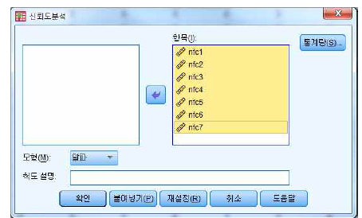
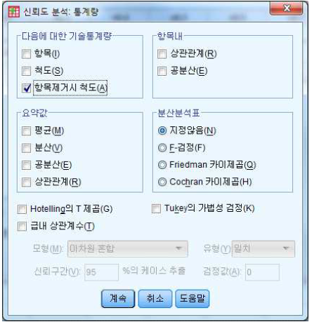
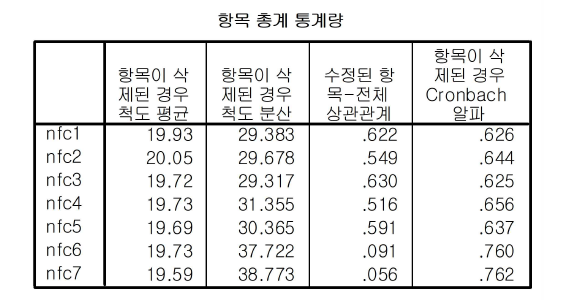
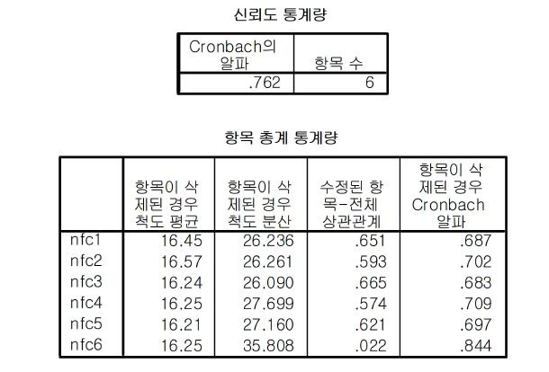
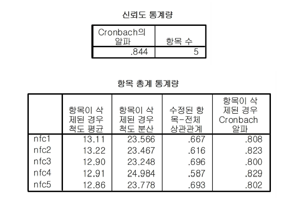

Chapter 13 신뢰성 분석
척도의 신뢰도(reliability)은 한 대상을 유사한 측정도구로 여러 번 측정하거나 한 가지 측정도구로 반복 측정했을 때 일관성 있는 결과(consistent results)를 산출하는 정도에 관련된다. 즉, 일관성 있는 결과가 산출될수록 그 척도(혹은 측정치)의 신뢰도가 높다. 척도의 신뢰도를 평가하는 방법에는 내적일관성(internal consistency), 반복측정 신뢰성(test-retest consistency), 대안항목 신뢰성(alternative-form reliability) 등이 있는데, 이 중 가장 많이 사용되는 방법은 내적일관성에 의한 방법이다.
내적일관성은 한 항목을 다항목으로 측정했을 때 항목들이 일관성(consistency) 혹은 동질성(homogeneity)을 갖는가에 관한 것이다. 내적일관성은 항목들 간의 상관관계로써 평가되는데, 항목들 간의 상관관계가 높을수록 내적일관성이 높다. 일반적으로 가장 많이 쓰이는 내적일관성에 의한 척도의 신뢰도 평가방법은 Cronbach’s coefficient alpha(줄여서 Cronbach’s 계수)를 이용하는 것이다.
그 공식은 다음과 같다.
\[ \alpha = ( \frac{k}{ k-1 } )( 1 - {\sum_{i=1}^k \sigma_i^2} / \sigma_t^2) \,\,\, 혹은 \,\,\, \frac{k\bar{r}}{1+\bar{r}(k-1)} \] 여기서, \(k\)=항목들의 수, \(\sigma_i^2\)=항목 \(i\)의 분산값, \(\sigma_t^2\)=항목의 전체 분산값, \(\bar{r}\) =항목들간 평균상관계수
Cronbach’s \(\alpha\)계수는 0에서 1 사이의 값을 가지며, 높을수록 바람직하나 반드시 몇 점 이상이어야 한다는 기준은 없다. 흔히 0.8-0.9이상이면 바람직하고, 0.6-0.7이면 수용할 만한 것으로 여겨진다. 그러나 0.6보다 작으면 내적일관성을 결여한 것으로 받아들여진다. 이 경우 Cronbach’s \(\alpha\)계수의 크기를 저해하는 항목들을 제거함으로써 계수 값을 크게 할 수 있다. 이러한 항목들은 그 항목과 전체 항목들 간의 상관관계(item-to-total correlation)가 낮은 항목들이다.
[예제] 개인들이 사고를 하려하고 이를 즐기는 성향에 대한 인지욕구를 측정한 자료이다. 이때 인지욕구를 7개 항목으로 측정하였으며, “전혀 그렇지 않다(0)~ 매우 그렇다(6)”의 7첨 Likert 척도로 답하였다.
(항목)
1. 나는 문제를 풀고 해답을 구하는 일을 무척 즐겨한다.
2. 나는 (다소 중요하지만 단순한 사고를 요하는 일보다) 중요하고 지적이며 어려운 일들을 훨씬 좋아한다.
3. 나는 상당한 정신적 노력을 쏟아야만 달성될 수 있는 목표를 설정하는 경향이 있다.
4. 나는 일반적으로 주어진 과제에서, 최소한으로 요구되는 정도보다 훨씬 많은 사고를 하려고 한다.
5. 나는 (단순한 사고를 요하는 일보다) 나의 사고력을 시험해 볼 수 있는 일을 하는 것을 상당히 좋아한다.
6. 나는 오랜 시간동안 깊이 심사숙고하는 것을 별로 좋아하지 않는 편이다.
7. 나는 깊은 사고력을 필요로 하는 일에 대한 책임을 맡는 것을 좋아하지 않는다.신뢰성 분석은 다음과 같이 실행한다.
분석(A)
척도화분석(A)
신뢰도분석(R)...
항목란에 분석하고자 하는 변수를 넣는다. 이때 모형은 ‘알파’를 선택한다.

통계량 창에서 항목제거시 척도(A)를 선택한다.
[결과 : 신뢰도 통계량]
신뢰도 통계량을 살펴보면 7개 항목의 전체 신뢰도 계수는 0.712로 나타난다.
[결과 : 항목 총계 통계량]

항목 총계 통계량은 각 항목을 제거했을 경우 변화되는 Cronbach’s 값을 나타낸다. 결과를 살펴보면 nfc7 변수를 제거하면 신뢰도 계수가 0.762로 향상되고 nfc6을 제거하면 0.760으로 향상된다. 항목 제거 순서는 제거 후 계수가 가장 크게 개선되는 항목을 우선적으로 제거한다.
따라서 nfc7 변수를 제거 후 다시 분석을 한다.
[결과]

6개 항목에 대한 신뢰도 계수가 0.762로 나타난다. 또한 nfc6을 제거하면 신뢰도 계수가 0.844로 향상됨을 알 수 있다.
따라서 nfc6 변수를 제거 후 다시 분석을 한다.
[결과]

5개 항목에 대한 신뢰도 계수가 0.844이다. 그리고 변수 제거 시 더 이상 신뢰도 계수가 향상되지 않음을 알 수 있다.
따라서 이후 분석에서는 nfc1, nfc2, nfc3, nfc4, nfc5 다섯 개 변수를 이용한다.
신뢰성 분석, 특히 내적일관성, 을 할 경우 단순히 신뢰도 계수를 높이기 위해 항목 제거를 하다보면 이후 분석에 사용할 변수가 남지 않게 되는 경우가 있다. 따라서 무작정 신뢰도 계수를 높이기보다 항목의 중요도를 고려하여 변수를 줄이는 것이 좋다.